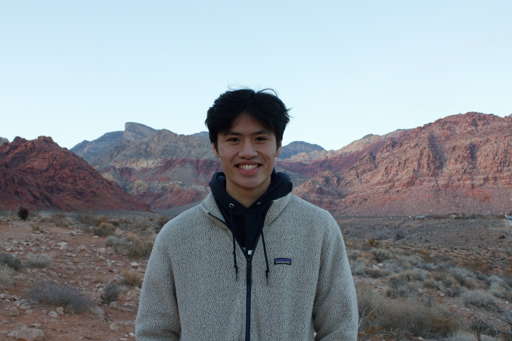
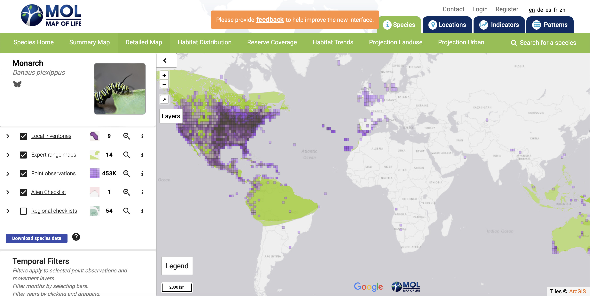
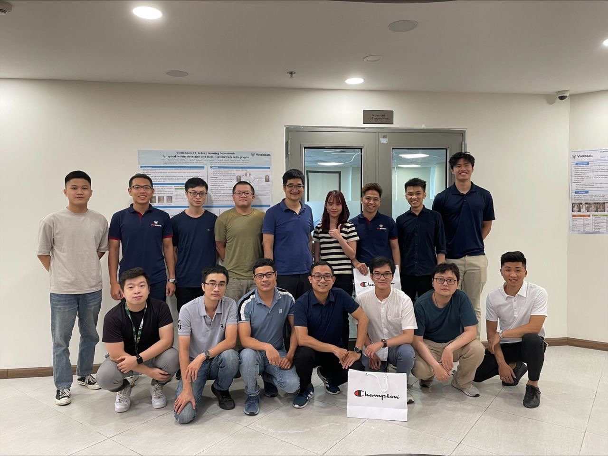
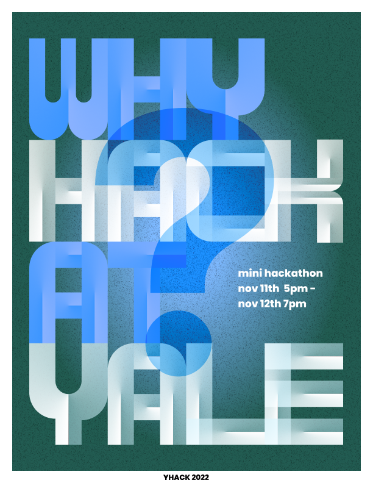
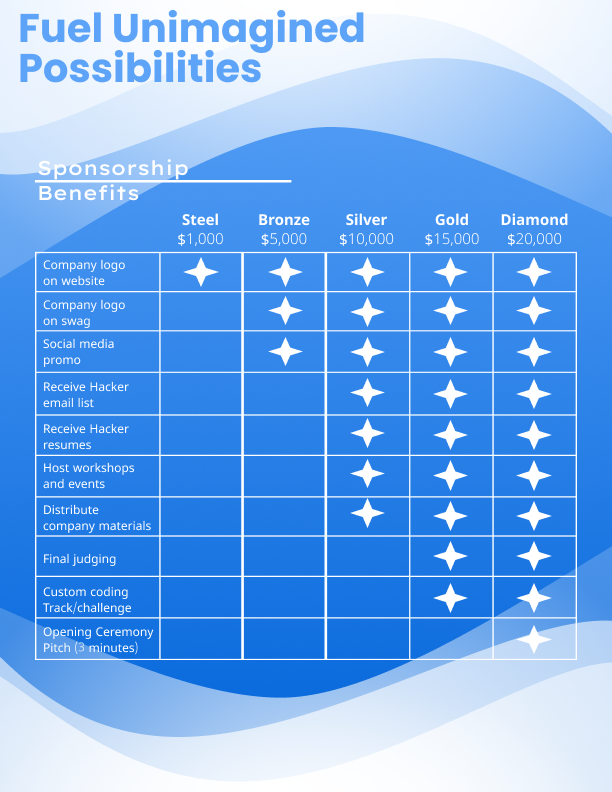
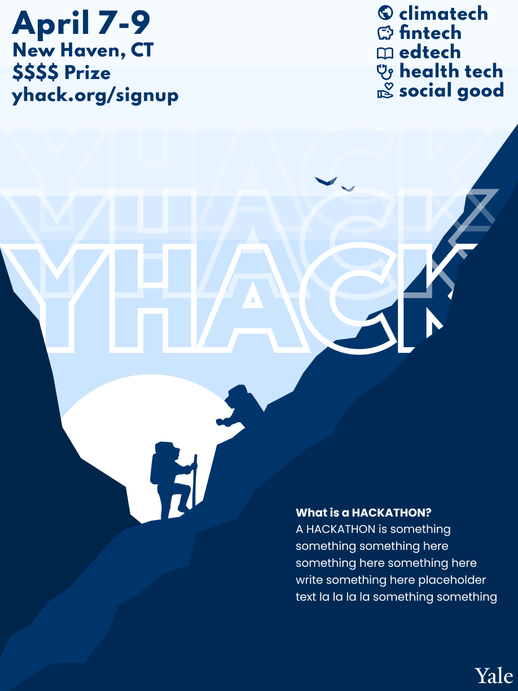

About Me
I am currently a third year at Yale University double majoring CS and Statistics and Data Science. Outside of class, you'd find me at the volleyball courts, going for a run, making art, and trying new things! If you like to learn more about my experiences, click on the links to the left! ⬅️
If you'd like to see my resume, click here!

Yale Center for Biodiversity and Global Change
As a data science intern, I worked on Yale BGC's flagship project, the Map of Life (mol.org)
Geographic information about biodiversity is vital for understanding the many services nature provides and their potential changes, yet remains unreliable and often insufficient. Built on a scalable web platform geared for large biodiversity and environmental data, Map of Life endeavors to provide 'best-possible' species range information and species lists for any geographic area. Map of Life aims to support effective and global biodiversity education, monitoring, research and decision-making by assembling and integrating a wide range of knowledge about species distributions and their dynamics over time.
I work closely with a team of four on improving the workflow of the implementation of species distribution models (SDMs), which is the backbone for interpreting spatial and environmental data pertaining to any species. This allows for spatial predictions to be made based on the niche and behavior of a given species. My responsibility is to implement a report generation system to the current workflow, which visualizes the summary statistics once a model has been run.
Languages: R, Python
Frameworks: SDM

Weill Cornell Medicine
At Weill Cornell, I worked closely with another student in developing IRIS (Intelligent Rapid Interactive Segmentation) for measuring liver cyst volumes in autosomal dominant polycystic kidney disease.
I was mentored by Dr. Thanh Nguyen
Languages: Python
Frameworks: PyQT
VinBigData
VinBigData JSC was founded as part of a key strategic development for Vingroup's goal of becoming a world-class Technology - Industrials - Services corporation, with technology taking center stage. Thanks to the competitive advantage of large-scale database, VinBigData provides cutting-edge products and platform solutions based on Big Data and Artificial Intelligence with world-class quality, supporting enterprises to accelerate digital transformation, optimize operation and business efficiency as well as enhance end-user experience.
I worked on the computer vision team, where we designed and tested methods to use deep learning for medical image segmentation.
Languages: Python
Frameworks: PyTorch, NumPy

Yale Computer Society
YCS is Yale's largest technology and entrepreneurship organization. YCS offers development projects to gain real-world software engineering experience, as well has hosting speaker and social events. Visit our page [here].
I am a software developer for ymeets, Yale's premier scheduling platform that makes scheduling meetings a seamless experience
Languages: JavaScript
Frameworks: React, AWS, Firebase
YHack
YHack is Yale's official hackathon, with thousands of participanting students yearly. Visit the website [here].
I am in charge of the design team, which involves designing advertisement materials (posters, brochures, merchandise), as well as the official website.
Languages: JavaScript
Frameworks: React
Tools: Figma


